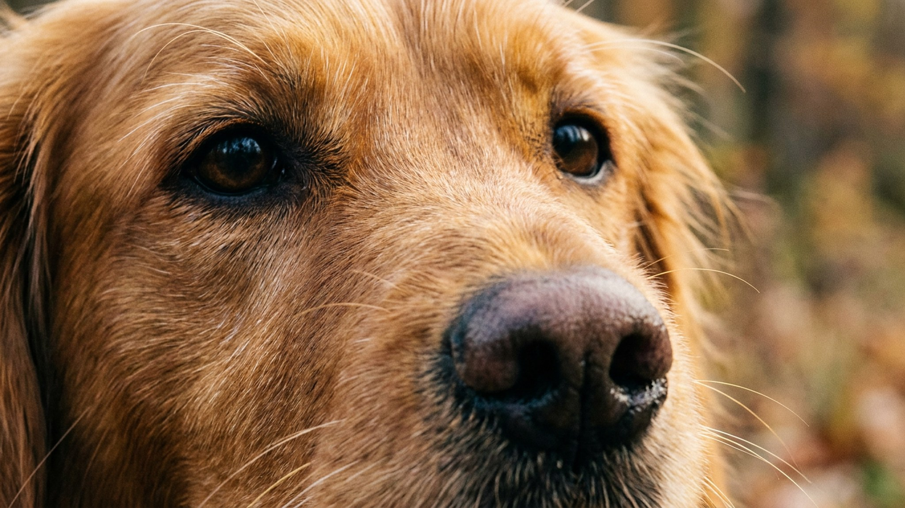

В конце августа на диване появляется заметно больше шерсти — хотя до холодов ещё далеко. Это не болезнь и не стресс: организм кошки и собаки реагирует на укорачивание светового дня, а не на температуру. Фотопериод — длина светлого времени суток — служит главным сигналом к смене шерстяного покрова. Ниже — почему осенняя линька такая интенсивная и как пережить её без шерсти по всей квартире.
У большинства кошек и собак в году два пика линьки: весенний (сброс зимней шерсти) и осенний (замена летней шерсти на более плотную). Осенний пик нередко ощущается острее: организм одновременно избавляется от старой шерсти и активно наращивает подшёрсток. Шерсть выпадает пучками, прилипает к одежде и мебели — и это норма.
У кошек, живущих в квартире с искусственным освещением, линька может быть менее выраженной по срокам, но не прекращается полностью: постоянный свет сглаживает сигнал, и кошка линяет равномернее в течение года. У собак, которые много времени проводят на улице, сезонность выражена чётче.
🐾 Заведите дневник ухода за питомцем
Вес, шерсть, обработки, прививки — всё в одном месте. А если что-то смущает, AI-ветеринар ответит круглосуточно и бесплатно.
Завести дневник → Завести в MAX →
У вас iPhone? AnimaLife есть в App Store
Осенняя линька равномерна по всему телу. Есть несколько признаков, при которых лучше не откладывать визит к врачу:
Перечисленное — не повод для паники, но повод описать картину ветеринару, чтобы он оценил ситуацию очно.
🐾 Чтобы уход не держать в голове
AnimaLife напомнит, когда стричь когти, вычёсывать, купать и обрабатывать от паразитов, и заведёт дневник по вашему питомцу. Бесплатно.
Настроить напоминания → Настроить в MAX →
У вас iPhone? AnimaLife есть в App Store
🐾 Понравился разбор?
Подпишитесь на канал — каждый день разбираем по одному тревожному симптому у кошек и собак: что в пределах нормы, а когда пора к врачу. Подпишитесь, чтобы не пропустить разбор, который может спасти здоровье вашего питомца.
Материал носит информационный характер и не заменяет очную консультацию ветеринара.